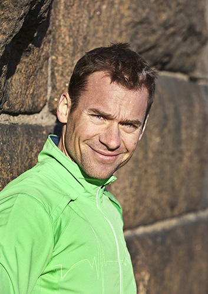
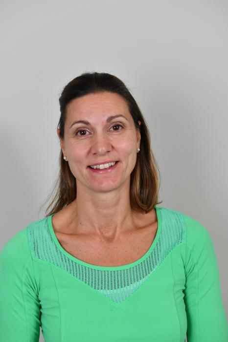

Tobias Rollne
Leg. fysioterapeut · Idrottsmedicin & OMTrollne@idrottskadespecialisten.se
Utbildning och titlar
- Legitimerad sjukgymnast/fysioterapeut, MSc – Karolinska Institutet 2002
- Examen i OMT 2006
- Specialistkompetens i Idrottsmedicin 2010
- Specialistkompetens i Ortopedisk Manuell Terapi 2011
- Deltagit på ett 20-tal vetenskapliga konferenser inom Idrottsmedicin, ortopedi och OMT
- Vidareutbildningar: CrossFit Level 1, CrossFit Endurance Trainer, Eleiko Strength Camp, Muscle Action Quality, SFMA m.fl.
Erfarenhet
- Arbetat som fysioterapeut på gym sedan 2002
- Chef för sjukgymnasterna på SATS (Nordens största träningsföretag) 2007–2017
- Hållit vidareutbildningar inom idrottsmedicin och OMT för yrkesverksamma fysioterapeuter
- Handledare för ett tiotal fysioterapeuter under specialisering
- Mastertrainer och löpcoach i 10 år

Beatrice Rollne
Leg. fysioterapeut · OMT & McKenziebea@idrottskadespecialisten.se
Utbildning och titlar
- Legitimerad sjukgymnast/fysioterapeut – Karolinska Institutet 2001
- Ergonom 2009
- Examen i McKenzie 2011
- Magisterexamen i sjukgymnastik 2012
- Specialistkompetens i OMT 2013
- Akupunktur
Erfarenhet
- Arbetat som fysioterapeut inom öppenvård sedan 2001
- Delägare i 10 år på en av Stockholms största fysioterapeutmottagningar
- Utarbetat vårdprogram med fysioterapeuter och ryggkirurg på Stockholm Spine Center samt med fotkirurger på Sophiahemmet
- Spelat i landslaget i vattenpolo i 10 år
Fysioterapeuter med specialistkompetens
En specialist inom fysioterapi har genomgått en lång och krävande vidareutbildning – liknande specialisering som läkare.
Fysioterapeuter kan, i likhet med läkare, välja att specialisera sig inom vissa områden. En specialist kan verka som:
- Kunskapsbärare – fördjupade kunskaper, färdigheter och förhållningssätt
- Kunskapsförmedlare – information, undervisning och handledning av andra
- Kunskapsutvecklare – utveckling och forskning
De grundläggande kraven för att kunna ansöka om specialistkompetens som fysioterapeut är:
- Akademisk fortbildning efter grundexamen (lägst magisterexamen) med presentation av fördjupningsarbete på vetenskaplig konferens eller i vetenskaplig tidskrift
- Klinisk fördjupning under handledning i 3 år
- Vidareutbildning med ämnesspecifika kurser, vetenskapliga konferenser och workshops som visar bredd och djup inom specialistområdet